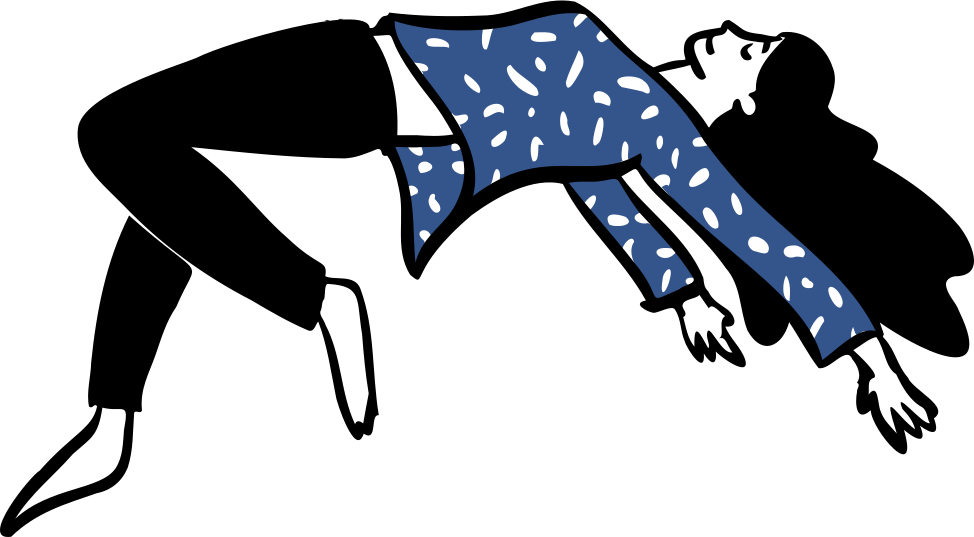

sobre
entre a pesquisa e a escrita, uma atenção às margens
saúde coletiva · educação médica · escrita · tecnologias educacionais

minha formação atravessa a saúde coletiva, as humanidades e os estudos interdisciplinares. atualmente, no doutorado em Ciências da Saúde do IAMSPE, com bolsa CAPES, investigo os modos pelos quais o currículo oculto e as desigualdades de gênero incidem sobre a saúde mental e a formação de estudantes de medicina no Brasil.
interessam-me as zonas menos visíveis da formação: os gestos, as hierarquias e os silêncios que organizam o cotidiano institucional; os efeitos da raça, do gênero e do território na produção de pertencimentos e ausências; as disputas em torno do cuidado e do reconhecimento de saberes. é desse campo que se desdobram minhas aproximações com educação médica, responsabilidade social, Amazônia e tecnologias educacionais.
a escrita acompanha esse trabalho como forma de elaboração e permanência. ela atravessa artigos, projetos e textos poéticos, sustentando perguntas que nem sempre se resolvem nos limites dos indicadores ou das classificações formais.